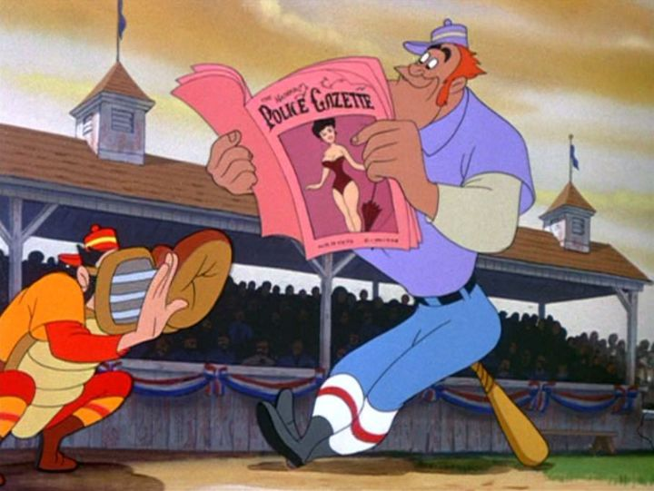

Disclaimer: This is a review of the 1946 musical anthology "Make Mine Music" by Walt Disney Animation Studios, as released to American audiences on VHS, DVD and Bluray (without the short "The Martins and the Coys").One of the good things about the Disney Plus streaming service is the sudden ease to watch virtually all of the Disney films, shorts, and television shows, something that would have taken thousands of dollars to collect on home video, and possibly decades to do, thanks to the company's infamous "get it before it's put back in the Disney Vault" scheme. You can watch all the classic 2D-animation theatrical films, except for one. The 1946 anthology "Make Mine Music" is missing. But why? Similar movies like "Melody Time" and "Fun and Fancy Free" are there. And it's not like there was something offensive about the movie; it was already released on VHS, is still easily found on DVD, and recently got a Disney-Movie-Club-exclusive Bluray release (of which many copies are available for marked-up prices on Ebay). My best guess is that since the film features so many songs by so many artists, that the company might have theatrical and home video rights to the music, but not Internet streaming rights. Whatever the reason, so few people would even recall the film to care enough about its absence. Of course, I wasn't old enough to see the original release, and the first I heard about it was as part of the celebrated final set of movies released on VHS (I even remember McDonalds getting Happy Meal toys based on the VHS collection, complete with miniature clamshell boxes). It wasn't until many years later that I learned that my memory of the movie was an edited version, missing one of the shorts: "The Martins and the Coys," removed supposedly for its cartoon violence featuring guns. Apparently, the short is still in tact in international versions, just not the American release. And despite advertising otherwise, the short is still missing on the most recent 2022 Bluray. It's frustrating to know something is missing, but technically, the edited collection matches the edited collection I remember from childhood, so I have no personal issues with the version we got. "Make Mine Music" was the third package film of shorts, after the heavily-Latin-America-focused movies "Saludos Amigos" and "The Three Caballeros." Since it's centered more in America (with a bit of international influence), this feels more like a true successor to "Fantasia," but with more modern pop and jazz tunes instead of purely classical. The structure is more straightforward, with no introductions by conductors or Disney-television hosts, just a title card before each segment. Therefore, it's closest to "Melody Time," but with more shorts packed in. "Make Mine" also feels a little more pure than "Melody" since it doesn't have ties to prior movies or characters, and it feels in this one like the animators were really given free reign to try whatever stories they had in mind (whereas with "Melody," they might have already run out of ideas a bit).  There are essentially three types of shorts in "Make Mine." The first are the slow, romantic, abstract ones, like "Blue Bayou," "Without You," and the rotoscoped-2D hybrid "Two Sihouettes." The second are the jumping, modern and energetic shorts (that might not have any story), like "All The Cats Join In" (a fun take on rowdy 1940's teenagers heading to a dance at the local malt shop) and "After You've Gone" (featuring dancing insturments). The third are more traditional "Silly Symphony"-type shorts with complete stories, including "Casey at the Bat," "Peter and the Wolf," Johnnie Fedora and Alice Bluebonnet," and "The Whale Who Wanted to Sing at the Met," each of which are quite strong, despite not fitting with the tone of the prior two types. In fact, all the shorts are quite decent, without a single flop among them. Even the slow, romantic ones, which I thought were boring as a kid, have a clear beauty to rediscover upon rewatching as an adult. I think the most memorable might be "All The Cats Join In," but I have a soft spot for each of the story-based shorts, some of which I saw on separate releases before ever seeing the complete "Make Mine Music" film. "Casey" will feel familiar and fun to fans of the later Disney short adaptation of "The Wind and the Willows." "The Whale" is a sweet but tragic tale. The most complete is "Peter and the Wolf," a clever cartoon version of the Russian fairy tale and classical orchestration, where each character is represented by a different instrument. It's a nice introduction to children about the power of music in storytelling, and makes many faithful allusions to the setting and language of Russia, a clear appreciation for the country's history of art (despite the Nazi regime that runs Moscow and attacks innocent countries as of this writing... recent events and politics might sour the enjoyment of any Russian-themed media). Compared to the rest of the Disney movies, none of the package movies are really essential, as they were developed cheaply as a way to save costs and use multiple ways to distribute the shorts produced. "Make Mine Music" is one of the better ones, if only slightly, due to the number and variety of the shorts, no single one outstaying its welcome, and each being solid enough to be worth watching once.
- "Ani" More reviews can be found at : https://2danicritic.github.io/ Previous review: review_Mai_Mai_Miracle Next review: review_Maquia_-_When_the_Promised_Flower_Blooms